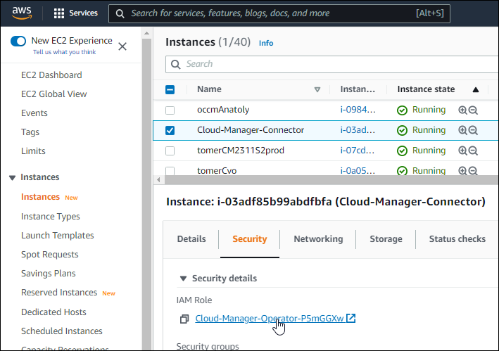
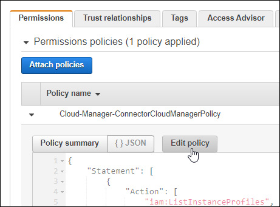
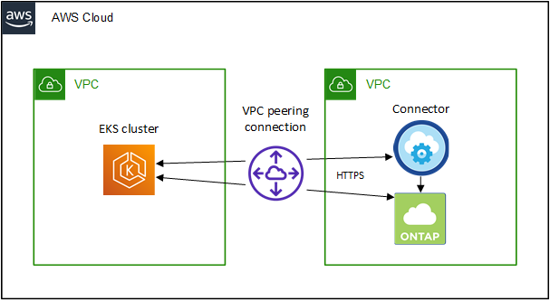

はじめに
はじめに
AWS での Kubernetes クラスタの要件
 変更を提案
変更を提案
AWS上の管理対象のAmazon Elastic Kubernetes Service（EKS）クラスタまたは自己管理型のKubernetesクラスタをBlueXPに追加できます。BlueXPにクラスタを追加する前に'次の要件が満たされていることを確認する必要があります

|
このトピックでは、 _Kubernetes cluster_where configuration is the same for EKS and selfmanaged Kubernetes clusters を使用します。クラスタタイプは設定が異なる場所で指定します。 |
要件
- Astra Trident
-
最新バージョンの 4 つの Astra Trident が必要です。Astra Tridentは、BlueXPから直接インストールまたはアップグレードできます。お勧めします "前提条件を確認します" Astra Trident をインストールする前に、
- Cloud Volumes ONTAP
-
Cloud Volumes ONTAP for AWS は、クラスタのバックエンドストレージとしてセットアップする必要があります。 "設定手順については、 Astra Trident のドキュメントを参照してください"。
- BlueXPコネクタ
-
必要な権限を持つコネクタが AWS で実行されている必要があります。 詳細は以下をご覧ください。
- ネットワーク接続
-
Kubernetes クラスタとコネクタの間、および Kubernetes クラスタと Cloud Volumes ONTAP の間にはネットワーク接続が必要です。 詳細は以下をご覧ください。
- RBAC 許可
-
BlueXP Connectorロールは、各Kubernetesクラスタで許可されている必要があります。 詳細は以下をご覧ください。
コネクタを準備します
Kubernetesクラスタを検出および管理するには、AWSにBlueXPコネクタが必要です。新しいコネクターを作成するか、必要な権限を持つ既存のコネクターを使用する必要があります。
新しいコネクターを作成します
次のリンクのいずれかの手順に従います。
必要な権限を既存のコネクタに追加します
3.9.13 リリース以降、 new_newly で作成されたコネクタには、 Kubernetes クラスタの検出と管理を可能にする新しい AWS 権限が 3 つ含まれています。このリリースよりも前のリリースでコネクタを作成していた場合は、権限を付与するために、コネクタの IAM ロールの既存のポリシーを変更する必要があります。
-
AWS コンソールにアクセスして EC2 サービスを開きます。
-
コネクタインスタンスを選択し、 * セキュリティ * をクリックして、 IAM ロールの名前をクリックし、 IAM サービスでロールを表示します。

-
[* アクセス許可 *] タブで、ポリシーを展開し、 [ * ポリシーの編集 * ] をクリックします。

-
JSON * をクリックして、最初のアクションセットに次の権限を追加します。
-
EC2: DescribeRegions (説明領域
-
EKS：リストクラスタ
-
EKS：DescribeCluster
-
IAM：GetInstanceProfile
-
-
[ ポリシーの確認 ] をクリックし、 [ 変更の保存 ] をクリックします。
ネットワーク要件を確認します
Kubernetes クラスタとコネクタの間、および Kubernetes クラスタとクラスタにバックエンドストレージを提供する Cloud Volumes ONTAP システムとの間にネットワーク接続を提供する必要があります。
-
各 Kubernetes クラスタがコネクタからインバウンド接続を確立している必要があります
-
コネクタには、ポート 443 経由で各 Kubernetes クラスタへのアウトバウンド接続が必要です
この接続を確立する最も簡単な方法は、 Kubernetes クラスタと同じ VPC にコネクタと Cloud Volumes ONTAP を導入することです。VPC が確立されていない場合は、 VPC 間に VPC ピアリング接続を設定する必要があります。
以下は、同じ VPC 内の各コンポーネントの例です。

別の VPC で実行されている EKS クラスタを次に示します。この例では、 VPC ピアリングによって、 EKS クラスタの VPC とコネクタおよび Cloud Volumes ONTAP の VPC 間の接続が確立されます。

RBAC 許可をセットアップします
コネクタがクラスタを検出して管理できるように、各 Kubernetes クラスタで Connector ロールを承認する必要があります。
異なる機能を有効にするには、異なる許可が必要です。
- バックアップとリストア
-
バックアップとリストアに必要なのは、基本的な許可だけです。
- ストレージクラスを追加する
-
BlueXPを使用してストレージクラスを追加し、バックエンドへの変更がないかクラスタを監視するには、拡張された許可が必要です。
- Astra Trident をインストールします
-
BlueXPがAstra Tridentをインストールするためには、完全な権限を付与する必要があります。
Astra Tridentをインストールすると、BlueXPはAstra Tridentバックエンドと、Astra Tridentのクレデンシャルを含むKubernetesシークレットをインストールして、ストレージクラスタと通信する必要があります。
-
クラスタロールとロールバインドを作成します。
-
要件に基づいて承認をカスタマイズできます。
バックアップ / リストアKubernetes クラスタのバックアップとリストアを有効にするための基本的な許可を追加する。
apiVersion: rbac.authorization.k8s.io/v1 kind: ClusterRole metadata: name: cloudmanager-access-clusterrole rules: - apiGroups: - '' resources: - namespaces verbs: - list - watch - apiGroups: - '' resources: - persistentvolumes verbs: - list - watch - apiGroups: - '' resources: - pods - pods/exec verbs: - get - list - watch - apiGroups: - '' resources: - persistentvolumeclaims verbs: - list - create - watch - apiGroups: - storage.k8s.io resources: - storageclasses verbs: - list - apiGroups: - trident.netapp.io resources: - tridentbackends verbs: - list - watch - apiGroups: - trident.netapp.io resources: - tridentorchestrators verbs: - get - watch --- apiVersion: rbac.authorization.k8s.io/v1 kind: ClusterRoleBinding metadata: name: k8s-access-binding subjects: - kind: Group name: cloudmanager-access-group apiGroup: rbac.authorization.k8s.io roleRef: kind: ClusterRole name: cloudmanager-access-clusterrole apiGroup: rbac.authorization.k8s.ioストレージクラスBlueXPを使用してストレージクラスを追加するには'拡張された認証を追加します
apiVersion: rbac.authorization.k8s.io/v1 kind: ClusterRole metadata: name: cloudmanager-access-clusterrole rules: - apiGroups: - '' resources: - secrets - namespaces - persistentvolumeclaims - persistentvolumes - pods - pods/exec verbs: - get - list - watch - create - delete - watch - apiGroups: - storage.k8s.io resources: - storageclasses verbs: - get - create - list - watch - delete - patch - apiGroups: - trident.netapp.io resources: - tridentbackends - tridentorchestrators - tridentbackendconfigs verbs: - get - list - watch - create - delete - watch --- apiVersion: rbac.authorization.k8s.io/v1 kind: ClusterRoleBinding metadata: name: k8s-access-binding subjects: - kind: Group name: cloudmanager-access-group apiGroup: rbac.authorization.k8s.io roleRef: kind: ClusterRole name: cloudmanager-access-clusterrole apiGroup: rbac.authorization.k8s.ioTridentのインストールコマンドラインを使用して完全な認証を行い、BlueXPでAstra Tridentをインストールできるようにします。
eksctl create iamidentitymapping --cluster < > --region < > --arn < > --group "system:masters" --username system:node:{{EC2PrivateDNSName}} -
クラスタに構成を適用します。
kubectl apply -f <file-name>
-
-
権限グループへの ID マッピングを作成します。
eksctl を使用しますeksctlを使用して、クラスタとBlueXPコネクタ用のIAMロールとの間にIAM IDマッピングを作成します。
以下に例を示します。
eksctl create iamidentitymapping --cluster <eksCluster> --region <us-east-2> --arn <ARN of the Connector IAM role> --group cloudmanager-access-group --username system:node:{{EC2PrivateDNSName}}aws -auth を編集しますAWS- AUTH ConfigMapを直接編集して、BlueXPコネクタのIAMロールへのRBACアクセスを追加します。
以下に例を示します。
apiVersion: v1 data: mapRoles: | - groups: - cloudmanager-access-group rolearn: <ARN of the Connector IAM role> username: system:node:{{EC2PrivateDNSName}} kind: ConfigMap metadata: creationTimestamp: "2021-09-30T21:09:18Z" name: aws-auth namespace: kube-system resourceVersion: "1021" selfLink: /api/v1/namespaces/kube-system/configmaps/aws-auth uid: dcc31de5-3838-11e8-af26-02e00430057c